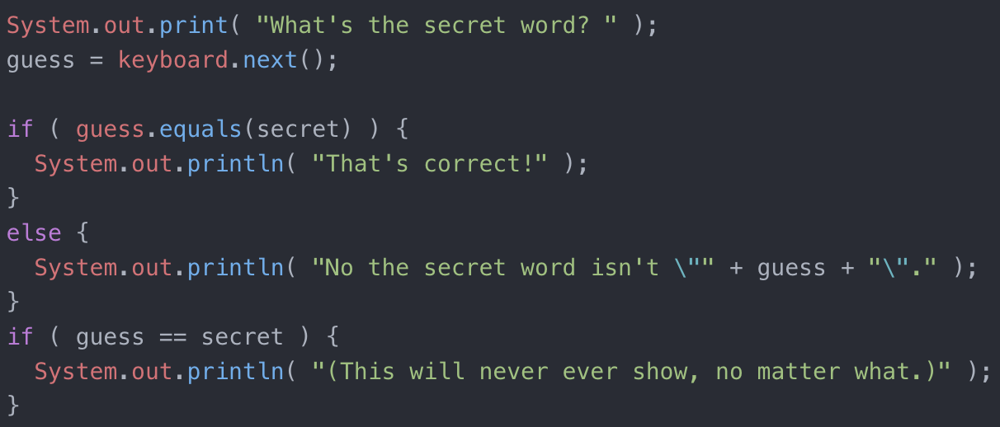
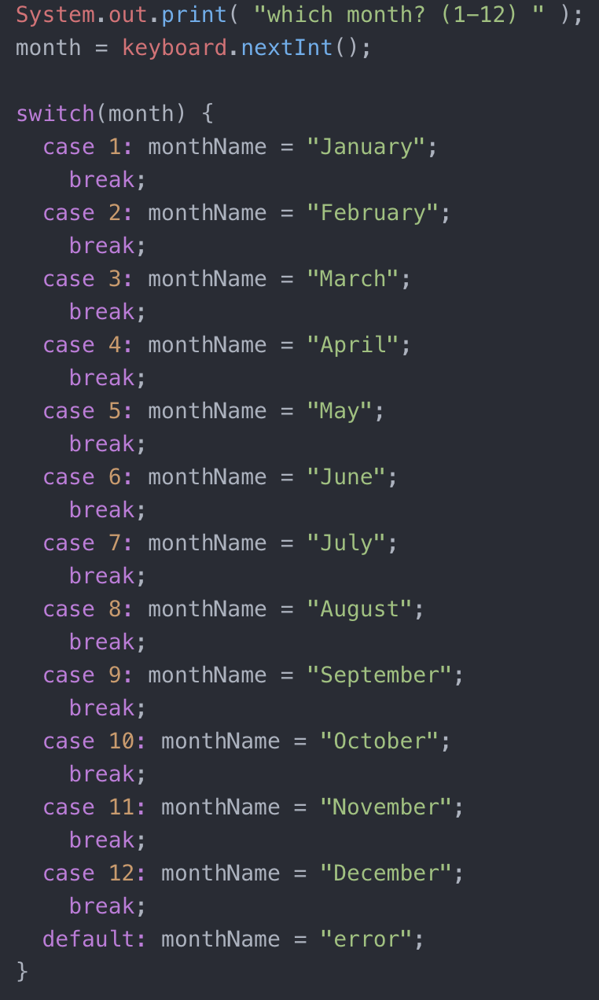

Based on my current knowledge of java I am going to explain the difference between using switch and if/else statements.
To begin, when would we need to use these types of statements? Lets say you would like a user to input a value of some kind. Whether it is a string or integer, doesn’t matter. You were also to provide what would appear next after the user (whether computer or human) makes their entry.
An if/else example: you ask them to solve a problem, whether guessing a value or solving a math problem. You would use a if/ else statement. This is what the code would look like:
An example of a switch: this is when you have a bigger list of things to choose from. Start off with a “switch (variable) {“ filled by a series of “case variable:”. The code will keep running through every case until it hits a “break;” you should put the break at the end of every case unless you want it to run multiple cases. Using “default:” will run a message if the user puts in a variable you haven’t identified. This is what the code looks like:
This is basically the gist of it. Both can be used much more in depth by nesting them or combining statements. I will save that discussion for a different topic.